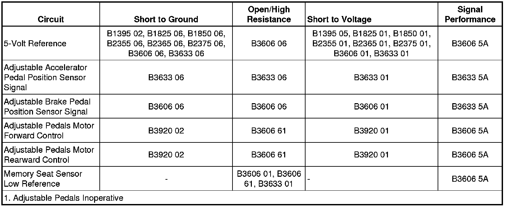

B3633
DTC B3632 or B3633
Diagnostic Instructions
* Perform the Diagnostic System Check - Vehicle (Initial Inspection and Diagnostic Overview) prior to using this diagnostic procedure.
* Review Strategy Based Diagnosis (Initial Inspection and Diagnostic Overview) for an overview of the diagnostic approach.
* Diagnostic Procedure Instructions (Initial Inspection and Diagnostic Overview)provides an overview of each diagnostic category.
DTC Descriptors
DTC B3633 01
- Pedals Horizontal Position Tracking Sensor Short to Battery
DTC B3633 06
- Pedals Horizontal Position Tracking Sensor Short to Ground or Open
DTC B3633 5A
- Pedals Horizontal Position Tracking Sensor Tracking Fault
Diagnostic Fault Information

Circuit/System Description
The memory seat module (MSM) monitors the locations of the adjustable pedals using position sensors mounted to the brake and accelerator pedal actuators. The position sensors are supplied with a 5-volt reference and ground circuits from the memory seat module. The position sensor signal circuits are referenced from ground within the memory seat module. The signal voltages monitored by the memory seat module range from 0.22-4.75 volts and are determined by the wiper locations on the resistors within the position sensors. The position sensor signal circuit voltage levels are used by the memory seat module to determine the positions of the adjustable pedals when storing or recalling memory position settings. The memory seat module also monitors the locations of both pedal assemblies in order to prevent a step over condition from occurring. During manual or memory operation the position sensor inputs to the memory seat module must remain within 0.1 volts or 33 counts of each other. During a calibration procedure the position sensor inputs must not vary more than 0.73 volts or 25 counts.
Conditions for Running the DTC
The memory seat module must be powered.
Conditions for Setting the DTC
B3633 01
If the MSM sees the analog input from this sensor is greater than 4.75 volts, the sensor will be considered out of range and the MSM will set this DTC.
B3633 06
If the MSM sees the analog input from this sensor is less than 0.22 volt , the sensor will be considered out of range and the MSM will set this DTC.
B3633 5A
During manual or memory operation the step over difference between the brake and accelerator pedal position sensor signals is greater than 0.1 volts or 33 counts.
Action Taken When the DTC Sets
Memory recall functions will be suspended.
Conditions for Clearing the DTC
* The current DTC will clear and set to history, when the MSM sees the analog input from the sensor as between 0.22 volt and 4.75 volts and the power mode changes to OFF then back to ACC or RUN.
* The history DTC will clear after 50 consecutive fault-free ignition cycles have occurred.
Diagnostic Aids
* The MSM may be referenced as the Driver Position Module.
* All seat and adjustable pedal position sensors use common ground and 5-volt reference circuits.
* If the 5-volt reference circuit is shorted to voltage multiple position sensor codes will set.
* If the 5-volt reference circuit is shorted to ground multiple position sensor codes will set.
* If the sensor ground circuit is open multiple codes may set.
* 1 count = 0.01961 volts, or 255 counts = 5.0 volts.
Reference Information
Schematic Reference
* Adjustable Pedal Schematics ([1][2]Electrical Diagrams)
* Driver Seat Schematics (Driver Seat Schematics)
Connector End View Reference
Component Connector End Views (Connector Views)
Description and Operation
Adjustable Pedals Description and Operation (Description and Operation)
Electrical Information Reference
* Circuit Testing (Component Tests and General Diagnostics)
* Connector Repairs (Component Tests and General Diagnostics)
* Testing for Intermittent Conditions and Poor Connections (Component Tests and General Diagnostics)
* Wiring Repairs (Component Tests and General Diagnostics)
Scan Tool Reference
Control Module References (Programming and Relearning)for scan tool information
Circuit/System Verification
Ignition ON, observe the scan tool Memory Seat Module, Accelerator Pedal Position Sensor parameter. The readings should be between 1.5 volts and 3.4 volts and change while adjusting the pedals position.
Circuit/System Testing
B3633 01 and B3633 06
1. Ignition OFF, disconnect the X207 inline harness connector.
2. Ignition OFF, test for less than 7 ohms of resistance between the low reference circuit terminal 13 and ground.
• If greater than the specified value, test the low reference circuit for an open/high resistance. If the circuit tests normal, replace the MSM.
3. Ignition ON, test for 4.8-5.2 volts between the 5-volt reference circuit terminal 2 and ground.
• If less than the specified range, test the 5-volt reference circuit for a short to ground or an open/high resistance. If the circuit tests normal, replace the MSM.
• If greater than the specified range, test the 5-volt reference circuit for a short to voltage. If the circuit tests normal, replace the MSM.
4. Ignition OFF, remove the 5-volt reference circuit terminal 2 from the MSM side of the connector.
5. Disconnect the X206 inline harness connector.
6. Remove the sensor signal circuit terminal 17 from the MSM side of the connector.
7. Connect the X206, X207 inline harness connectors.
8. Ignition ON, verify the scan tool Accelerator Pedal Position Sensor parameter is less than 0.45 volts.
• If greater than the specified value, test the signal circuit terminal 17 for a short to voltage. If the circuit tests normal, replace the MSM.
9. Install a 3A fused jumper wire between the signal circuit terminal 17 and the 5-volt reference circuit terminal 2. Verify the scan tool Adjustable Accelerator Pedal Sensor parameter is greater than 4.75 volts.
• If less than the specified value, test the signal circuit for short to ground or an open/high resistance. If the circuit tests normal, replace the MSM.
10. Test the accelerator pedal position sensor circuits between the inline harness connector and the sensor for the following conditions:
* An open
* A short to ground
* A short to voltage
• If all circuits test normal, test or replace the adjustable accelerator pedal sensor.
B3633 5A
1. Ignition ON, verify that no other adjustable pedal DTCs are set.
• If other adjustable pedal DTCs are set, diagnosis those DTCs first.
2. Verify that the pedals operate to the full forward and rearward positions.
• If not the specified range, refer to Adjustable Pedals Malfunction (Adjustable Pedals Malfunction) .
3. Disconnect the adjustable pedal drive cables from the motor.
4. Observe the scan tool Accelerator and Brake Pedal Position Sensor parameters while manually rotating the cables until the position sensor values are within 0.1 volts of each other.
• If greater than the specified range, test or replace the appropriate cable or pedal assembly.
5. Perform the adjustable pedal calibration procedure. Refer to Adjustable Pedal System Calibration (Programming and Relearning) .
6. Verify the scan tool Accelerator and Brake Pedal Position Sensor parameter values are within 0.6 volts of each other.
• If greater than the specified range, test or replace the appropriate cable or pedal assembly.
7. If all circuits/systems test normal, replace the MSM.
Repair Instructions
Perform the Diagnostic Repair Verification (Verification Tests) after completing the diagnostic procedure.
* Accelerator Pedal Assembly Replacement (LHD) (Accelerator Pedal Assembly Replacement (LHD))Accelerator Pedal Assembly Replacement (RHD) (Accelerator Pedal Assembly Replacement (RHD))
* Brake Pedal Assembly Replacement (LHD) (Brake Pedal Assembly Replacement (LHD))Brake Pedal Assembly Replacement (RHD) (Brake Pedal Assembly Replacement (RHD))
* Accelerator Control Cable Replacement (Accelerator Control Cable Replacement)
* Brake Pedal Adjuster Actuator Cable Replacement (Brake Pedal Adjuster Actuator Cable Replacement)
* Control Module References (Programming and Relearning)for the memory seat module replacement and setup procedures